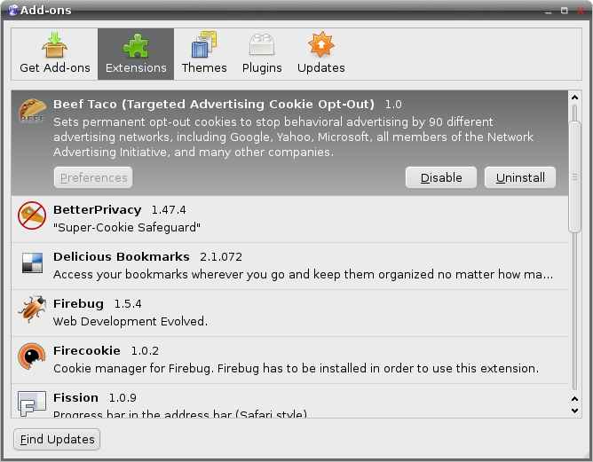
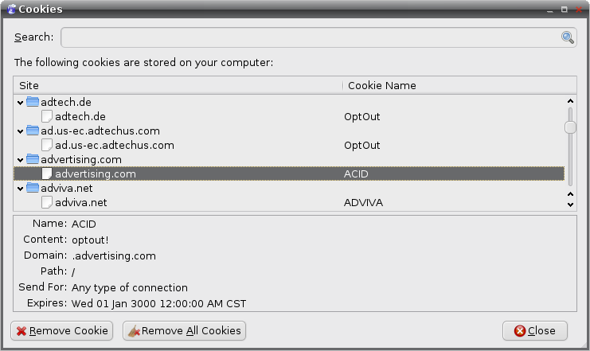

Targeted Advertising Cookie Opt-Out (TACO) is a Firefox plugin that jumped the shark. In 3.0 they introduced new features, and a bunch of fancy gui stuff to match it. This removed the simple, painless beauty that was TACO 2.0.
To quote a review:
Unbelievable how this very good Add-on (TACO 2.0) could fall so deep. The new version (3.0.x) is a nightmare. It's bloated (up to 3MB), slow and has a terrible Preference-dialog (more like a christmas tree).
You are well-advised to avoid the new version and go back to 2.0. "Nightly Tester Tools" or/ and "MR Tech Toolkit" will help you to make it compatible. Or do it manual.
I'm desperately disappointed.
Beef Taco is a fork of TACO 2.0, before the new features and UI, and kept up to date with the most recent Firefox versions. This is not a replacement for all the goodies that are in TACO 3.0+, and there are some useful tools, it's just a path back to a simpler time.
Please install it from Mozilla at https://addons.mozilla.org/en-US/firefox/addon/180650/ to stay up to date. While you are there, add a review too!
As an alternative, you can download it right here, right now from this site, but I don't believe you will get update notifications. I'm not sure, I'm new to the Firefox extension process).

The Extension Installed

The Proof Is In The Beef
Previous Authors (TACO 2.0)
John Hobbs (john@velvetcache.org)
You can download this project in either zip or tar formats.
You can also clone the project with Git by running:
$ git clone git://github.com/jmhobbs/beef-taco